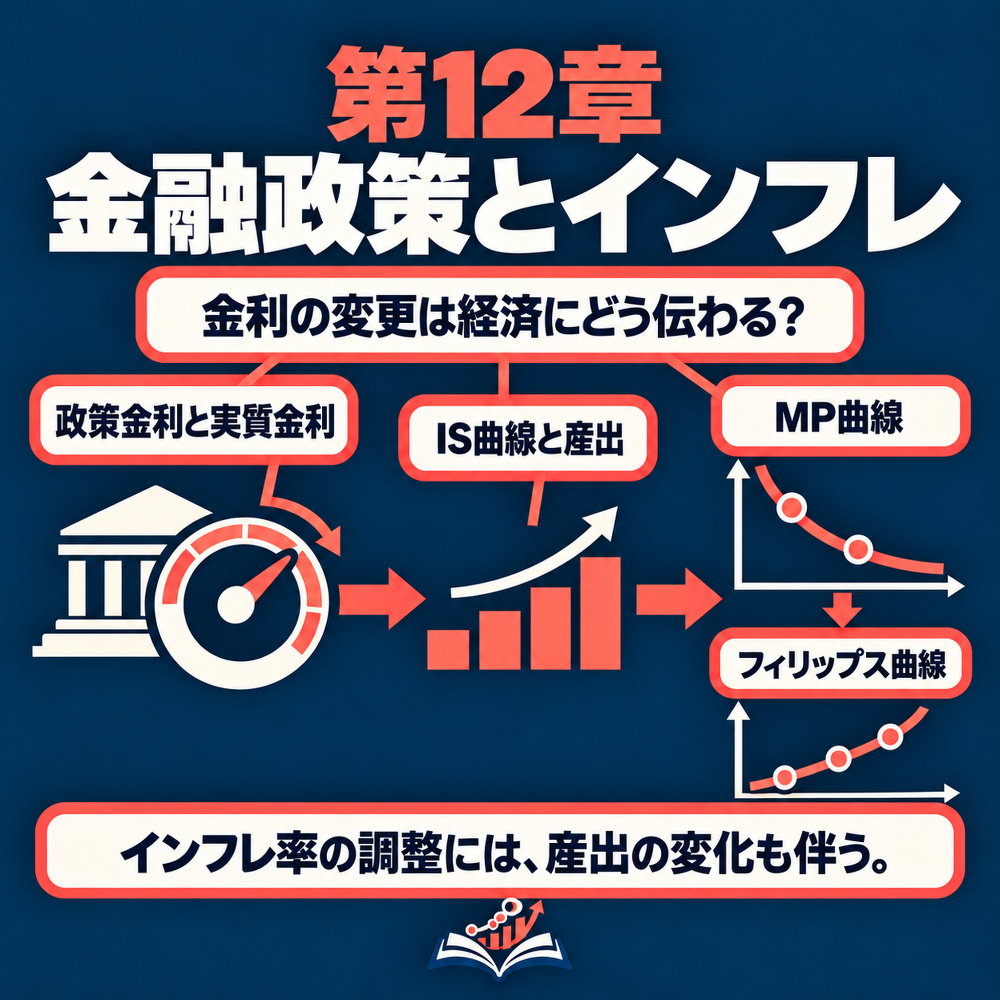

司会者17秒ch12-t001
Welcome back. Today we are on monetary policy: how a central bank uses one interest rate to steer a whole economy. Let's start with a story from 1979.
今回もよろしくお願いします。お帰りなさい。今日は金融政策、つまり中央銀行が一つの金利を使って経済全体を動かす方法を取り上げます。1979年の話から始めましょう。
Carlos Mendez · 日本語レッスン · Chapter 12
この課では、中央銀行が一晩物の金利を使って実質金利、産出量、インフレを動かす仕組みと、インフレを下げるのに景気後退が必要な理由を日本語で聞きます。シャドーイングで金融政策を説明する表現を身につけ、最後に同じ内容をN1レベルの書き言葉で読み、自分の言葉で説明します。
Hear how a central bank's overnight rate moves the real rate, output and inflation, and why disinflation takes a recession; shadow the explanations, then read the same ideas in N1-level written Japanese and explain them yourself.
まず語彙を確認してから音声を聞きましょう。カードをめくって、意味が言えたら「覚えた」を押します。Preview the words first. Flip each card; mark it once you can recall the meaning.
覚えた語：0 / 30
レベルは日本語能力試験の公式リストではなく、推定です。JLPT levels are estimates; there is no official list.
まず一度、本文を見ずに最後まで聞きます。分からない所があっても止めずに、全体の流れをつかみましょう。Listen once without the text to get the overall flow; don't stop for gaps.

▶で1つの発言を再生します。再生中はボタンが■に変わり、もう一度押すと止まります。⟲でくり返し再生します。「自動ポーズ」をオンにすると、発言のあとに同じ長さの間が入り、その間に声に出して言えます。下線の語は推定N1以上の語です。▶ plays one turn and turns into ■; press it again to stop. ⟲ loops it. Auto-pause leaves a gap after each turn for you to repeat, then moves on. Underlined words are estimated N1 or above.
Welcome back. Today we are on monetary policy: how a central bank uses one interest rate to steer a whole economy. Let's start with a story from 1979.
今回もよろしくお願いします。お帰りなさい。今日は金融政策、つまり中央銀行が一つの金利を使って経済全体を動かす方法を取り上げます。1979年の話から始めましょう。
That year, prices in the United States were going up by more than 10 percent a year. That rate is called inflation. Paul Volcker became head of the Federal Reserve, the U.S. central bank, or the Fed for short. By 1981, the Fed had pushed its interest rate to nearly 20 percent.
その年、米国では物価が年率10％を超えて上がっていました。この上昇率をインフレと呼びます。ポール・ボルカーが米国の中央銀行、連邦準備制度、略してFRBのトップになりました。1981年までに、FRBは金利をほぼ20％まで引き上げました。
Nearly 20 percent? Who could borrow at that price?
ほぼ20％ですか。その金利で借りられる人はいたのでしょうか。
Very few. Firms cut their investment, their spending on new machines and buildings, and families bought far fewer new houses. The country fell into its deepest recession in decades. A recession is a time when the economy produces less than it normally can. But inflation came down fast.
ほとんどいません。企業は新しい機械や建物への支出である投資を減らし、家計は新築住宅を大幅に買い控えました。米国は数十年ぶりの深い景気後退に陥りました。景気後退とは、経済が通常の生産能力を下回る状態です。しかしインフレは急速に低下しました。
So the Fed caused a recession on purpose. Here is today's question. How does the central bank's interest rate move output and inflation, and why does bringing inflation down take a recession?
つまりFRBは、意図的に景気後退を起こしたのですね。今日の問いです。中央銀行の金利は産出量とインフレをどう動かすのでしょうか。なぜインフレを下げるには景気後退が必要なのでしょうか。
By the end of this episode, you'll be able to do three things. First, explain how one overnight interest rate moves the real interest rate, the cost of a loan after inflation, and then output, what the economy produces, and inflation. Second, use the Phillips curve, a rule that links output to inflation, to explain why a boom makes inflation rise every year it lasts. Third, explain why bringing inflation down takes a recession, and work out how much output it costs.
このエピソードを聞き終わるころには、三つのことができるようになります。一つ目は、一晩物の金利がどのように実質金利、つまりインフレを差し引いた借入費用を動かし、さらに産出量、つまり経済の生産物とインフレを動かすかを説明することです。二つ目は、産出量とインフレを結び付けるルールであるフィリップス曲線を使って、好景気が続く間、なぜ毎年インフレが上がるのかを説明することです。三つ目は、インフレを下げるのに景気後退が必要な理由と、そのための産出損失の大きさを計算することです。
And we'll follow the chapter's mind map part by part?
章のマインドマップを、順番に見ていくのですね。
Yes. Part one is the central bank's lever, its main tool. Part two joins two curves we'll explain, the IS curve and the MP curve, with the Phillips curve. Part three is about disinflation, meaning bringing inflation down, and the Great Inflation, the high inflation of the 1970s. Each part has a few leaves, small topics we take in order.
はい。第1部は中央銀行のてこ、つまり主な政策手段です。第2部では、説明する二つの曲線、IS曲線とMP曲線をフィリップス曲線と組み合わせます。第3部はディスインフレ、つまりインフレを下げることと、1970年代の高インフレである大インフレを扱います。各部にはいくつかの小項目があり、順番に取り上げます。
Part one of the map: The central bank's lever. A lever is a handle you pull to move something heavy. The first leaf is the fed funds rate. What is it?
マップの第1部は中央銀行のてこです。てことは、重いものを動かすために引く取っ手です。最初の項目はフェデラル・ファンド金利です。何ですか。
Banks lend to each other overnight, and the fed funds rate is the interest rate on those loans. The Fed decides where it should be. Its peak was 19.1 percent, in June 1981, under Volcker.
銀行は一晩の融資を互いに行い、フェデラル・ファンド金利はその融資の金利です。FRBはその水準を決めます。ボルカーの下で1981年6月に19.1％のピークに達しました。
And the lowest?
最も低かったときはどうでしたか。
Almost zero. After the global financial crisis, it stayed near zero from 2009 to 2015. In the Covid pandemic, it was near zero again, in 2020 and 2021.
ほぼゼロでした。世界金融危機の後、2009年から2015年までほぼゼロにとどまりました。新型コロナウイルス感染症のパンデミックの間も、2020年と2021年には再びほぼゼロでした。
Next leaf: setting the rate. How can the Fed decide what private banks charge each other?
次の項目は金利の設定です。FRBはどうやって民間銀行同士が課す金利を決めるのですか。
Let's visit Islandia, a small imaginary island country. Its central bank, the Bank of Islandia, will lend or borrow any amount overnight at its chosen rate, say 7 percent. So no private bank pays more than 7 percent to borrow. It could always borrow from the central bank instead. And no bank can keep lending below 7 percent. Other banks would borrow that cheap money and put it in the central bank at 7 percent, a gain with no risk. Soon the cheap lender would run out of money.
架空の小さな島国、アイランディアに行きましょう。島の中央銀行であるアイランディア銀行は、たとえば7％という自ら選んだ金利で、一晩物の融資をいくらでも貸し出し、またはいくらでも借り入れます。ですから民間銀行が借りるのに7％を超えて払うことはありません。中央銀行から借りればよいからです。また、7％を下回る金利で貸し続ける銀行もありません。ほかの銀行がその安い資金を借りて、中央銀行に7％で預ければ、リスクなしで利益が出ます。そうなれば、安く貸した銀行はすぐ資金が尽きます。
The leaf says the central bank supplies whatever money is demanded at its target, meaning the rate it aims for. How does money fit into this?
この項目には、中央銀行は目標金利、つまり目指す金利で、需要された分だけ通貨を供給するとあります。通貨はどう関係しますか。
Islanders hold cash and checking accounts, which pay no interest, and savings accounts, which do. So the interest rate is what you give up by holding money. When islanders want more money, the central bank supplies it at its target rate. It buys government bonds, which are loans to the government, and pays with new money. So the amount of money moves, and the rate stays the same. With a fixed amount of money, every change in demand for it would move the rate, and then spending, for no good reason.
島の人々は利息の付かない現金と当座預金、そして利息の付く普通預金を持っています。つまり金利は、貨幣を保有することで手放すものです。島民がもっと貨幣を望めば、中央銀行は目標金利で供給します。政府への融資である国債を買い、新しく作った貨幣で支払います。こうして貨幣量が動き、金利は同じに保たれます。貨幣量を固定すると、貨幣需要が変わるたびに金利が動き、さらに支出まで動いてしまいますが、それには理由がありません。
Next leaf: the real rate is the nominal rate minus inflation, with inflation sticky. What do those words mean?
次の項目は、インフレが粘着的なとき、実質金利は名目金利からインフレ率を引いたものだということです。どういう意味ですか。
The nominal rate is what a loan costs in money. The real rate is what it costs in goods. Harbor Boatworks, Islandia's boat builder, borrows to build boats. Say it pays 7 percent interest, and prices rise 2 percent a year. Its boats will sell for more next year, so in boats, the loan costs only about 5 percent.
名目金利は貨幣で測った融資費用です。実質金利は財で測った費用です。アイランディアの造船所、ハーバー造船所は船を造るために借り入れます。金利が7％で、物価が年2％上がるとしましょう。来年は船をより高く売れるので、船で測った借入費用は約5％だけです。
And sticky?
「粘着的」とはどういう意味ですか。
The Bank sets only the nominal rate. To move the real rate, it needs inflation to stay the same for a while. On Islandia, inflation moves only slowly, because firms change their prices only now and then. So for about six months, inflation doesn't react to the Bank.
銀行が決めるのは名目金利だけです。実質金利を動かすには、インフレ率がしばらく同じである必要があります。アイランディアでは、企業がときどきしか価格を変えないため、インフレはゆっくり動きます。ですから約6か月間、インフレは銀行に反応しません。
So when the Bank raises its rate from 7 to 8 percent, with inflation stuck at 2 percent...
では、銀行が金利を7％から8％に上げ、インフレが2％に固定されていれば……
The real rate goes from 5 to 6 percent. That's a rise of 1 percentage point, the plain difference between two percentages. Each point on the nominal rate is a point on the real rate. So while inflation is sticky, the central bank chooses the real rate. This choice is called the MP curve, where MP stands for monetary policy.
実質金利は5％から6％に上がります。これは1パーセントポイントの上昇で、二つの割合の単純な差です。名目金利の1ポイントは、実質金利の1ポイントに当たります。したがってインフレが粘着的な間は、中央銀行が実質金利を選べます。この選択をMP曲線と呼びます。MPは金融政策を意味します。
Last leaf of this part: the yield curve, inverted from November 2022. But Harbor Boatworks borrows for years, not for one night.
この部の最後は、2022年11月から逆イールドになったイールドカーブです。でもハーバー造船所は一晩ではなく、何年も借り入れます。
A saver can buy one two-year bond, or a one-year bond now and another next year. If one plan paid more, nobody would choose the other. So a long rate is roughly the average of the short rates expected until the loan is paid back. If the one-year rate is 4 percent, and investors expect 6 next year, the two-year rate is about 5. The yield curve shows the rates on loans of different lengths.
貯蓄する人は、2年債を1本買うことも、今1年債を買い、翌年にもう1本買うこともできます。一方の計画のほうが利益が大きければ、誰も他方を選びません。ですから長期金利は、融資返済までに予想される短期金利の平均におおよそ等しくなります。1年金利が4％で、投資家が翌年6％になると予想すれば、2年金利は約5％です。イールドカーブは、期間が異なる融資の金利を示します。
Then when the Fed raises its rate, I'd guess all rates go up by the same amount.
FRBが金利を上げると、すべての金利が同じ幅だけ上がると思います。
Not quite. The longer investors expect the short rate to stay high, the more a long rate goes up. In 2022, inflation was high, and the Fed raised its rate fast. Short rates went above 4 percent, but long rates went up less. From November 2022, the curve was inverted, or upside down: long rates were below short ones. Investors expected rates to fall later, once inflation was down.
そうとは限りません。投資家が短期金利は高いままだと予想する期間が長いほど、長期金利の上昇幅も大きくなります。2022年にはインフレが高く、FRBは金利を急速に上げました。短期金利は4％を超えましたが、長期金利の上昇幅は小さくなりました。2022年11月からイールドカーブは逆転し、長期金利が短期金利を下回りました。投資家は、インフレが下がった後に金利も下がると予想しました。
So in part one we saw the lever. The central bank fixes an overnight rate, and because inflation is sticky, that moves the real rate. Longer rates follow what investors expect.
第1部では、政策のてこを見ました。中央銀行は一晩物の金利を固定し、インフレが粘着的なため、それが実質金利を動かします。長期金利は投資家の予想に従います。
Next branch: what the real rate does to output, and what output does to inflation.
次の枝では、実質金利が産出量に与える影響と、産出量がインフレに与える影響を見ます。
Part two of the map: IS, MP and the Phillips curve. The first leaf: the real rate goes from 5 to 6 percent, and output falls 2 percent. Why?
マップの第2部は、IS曲線、MP曲線、フィリップス曲線です。最初の項目は実質金利が5％から6％へ上がると産出量が2％下がる、です。なぜですか。
Because of the IS curve from Chapter 11, the rule that links the real rate to output. On Islandia, new capital, like a boat shed, earns 5 percent a year. When a loan costs more than that, firms invest less. In normal times, at a real rate of 5, Islandia is at potential output. That's its normal level, with workers and machines used at a normal pace.
第11章のIS曲線、つまり実質金利と産出量を結ぶルールによるものです。アイランディアでは、船小屋のような新しい資本は年5％を稼ぎます。融資費用がそれを上回ると、企業は投資を減らします。通常時には、実質金利が5％ならアイランディアは潜在産出量にあります。労働者と機械が通常のペースで使われる水準です。
And at 6 percent?
6％ならどうなりますか。
A loan now costs 1 point more than a new shed earns, so Harbor Boatworks delays new sheds. Each point of that gap cuts output by 2 percent of potential, so output ends 2 percent below potential. We call this short-run output: the percent gap between actual and potential output, here minus 2. Above potential is a boom, below it a slump. In a diagram, the MP curve is a flat line at the Bank's chosen rate, and the IS curve slopes down, because a higher rate means less output. Islandia sits where they cross.
融資費用が新しい船小屋の収益を1ポイント上回るので、ハーバー造船所は新しい船小屋の建設を先送りします。金利差が1ポイント広がるごとに産出量が潜在水準の2％分下がるため、産出量は潜在水準を2％下回ります。これを短期の産出量と呼びます。実際の産出量と潜在産出量の差を％で表したもので、ここではマイナス2です。潜在水準を上回れば好況、下回れば不況です。図では、MP曲線は銀行が選んだ金利の高さにある水平線で、IS曲線は右下がりです。金利が高いほど産出量が少ないからです。アイランディアは二つの交点に位置します。
Next leaf: a housing bust, and a cut from 5 to 4 percent.
次は住宅バブルの崩壊と、金利を5％から4％へ引き下げることです。
When house prices fall sharply, families feel poorer and spend less. That's a demand shock: a change in spending that doesn't come from the interest rate. Say it cuts spending by 2 percent of potential. If the rate does not change, output falls by that same amount. But each point of rate cut adds 2 percent to output, through cheaper loans. So a cut of one point, from 5 to 4 percent, fills the hole in spending.
住宅価格が急落すると、家計は貧しくなったと感じて支出を減らします。これは金利によらない支出の変化で、需要ショックです。潜在産出量の2％分だけ支出が減るとしましょう。金利が変わらなければ、産出量も同じだけ減ります。しかし金利を1ポイント下げるごとに、融資費用が下がるため産出量は2％増えます。5％から4％への1ポイントの引き下げで、支出の落ち込みを埋め合わせられます。
That sounds too easy.
簡単すぎるように聞こえます。
In practice, it's hard. A shock takes time to see, and a rate change takes between 6 and 18 months to reach spending.
実際には難しいです。ショックを認識するのに時間がかかり、金利変更が支出に届くまでに6～18か月かかります。
Next leaf is the equation of the Phillips curve. What does it say?
次の項目はフィリップス曲線の式です。何を表すのですか。
In words: the change in inflation from last year to this year equals a slope times short-run output, the gap from potential, plus a price shock. The slope says how strongly prices react to a boom or a slump.
言葉で言えば、前年から今年へのインフレの変化は、傾きかける短期の産出量、つまり潜在水準とのギャップに、価格ショックを足したものです。傾きは、好況や不況に物価がどれほど強く反応するかを示します。
But why would output change inflation?
でも、なぜ産出量でインフレが変わるのですか。
Say prices on Islandia have gone up 2 percent a year for a while. Harbor Boatworks expects the same this year. That's expected inflation: Islandia's firms expect this year's inflation to equal last year's. In a boom, orders are strong, so the firm raises its prices a bit more than that. In a slump, a bit less, to win customers back.
アイランディアの物価がしばらく年2％上がっていたとしましょう。ハーバー造船所は今年も同じだと予想します。これが予想インフレで、アイランディアの企業は今年のインフレ率が前年と同じになると考えています。好況では注文が多いので、企業は予想より少し高く価格を上げます。不況では客を取り戻すため、少し低く上げます。
How much more?
どれくらい高くなるのですか。
In this chapter's example, the slope is one half, a round number for teaching. Chapter 9's estimate for the United States was flatter, about one third. So with output 2 percent above potential, inflation rises by half of that, from 2 to 3 percent.
この章の例では、教えるための切りのよい数値として傾きは2分の1です。第9章の米国の推定値はもっと緩やかで、約3分の1でした。産出量が潜在水準を2％上回れば、その半分だけインフレが上がり、2％から3％になります。
And if the boom goes on next year, my guess is that inflation stays at 3. It already went up once.
そして好況が翌年も続くと、インフレは一度上がったのだから3％のままだと思います。
It went up once, yes, but watch next year. Firms now expect 3 percent, last year's inflation. Orders are still strong, so they add a bit more again, and inflation reaches 4. Output sets the change in inflation, not its level. So inflation climbs every year the boom lasts. At potential, it stays at its new level.
一度上がったのはそのとおりですが、翌年を見てください。企業は前年のインフレ率、つまり3％を予想します。注文が引き続き強いので、もう少し上乗せし、インフレ率は4％になります。産出量が決めるのはインフレの水準ではなく変化です。だから好況が続く年ごとにインフレが上がります。潜在水準では、新しい水準のままになります。
Next leaf: an oil shock shifts the curve up.
次の項目は、石油ショックが曲線を上にシフトさせることです。
That's the price shock. When oil prices jump, gasoline, flights and heating cost more at once, and firms that use oil raise their prices. So inflation goes up even with output at potential.
それが価格ショックです。石油価格が跳ね上がると、ガソリン、航空運賃、暖房の費用が一度に上がり、石油を使う企業も価格を上げます。したがって、産出量が潜在水準にあってもインフレが上がります。
Say an oil shock adds 1 point, so inflation goes from 2 to 3 percent. Once oil prices stop rising, inflation should go back to 2 by itself.
石油ショックでインフレが1ポイント上がり、2％から3％になったとします。石油価格の上昇が止まれば、インフレは自然に2％へ戻るはずです。
Many students believe that, but in this model it's wrong. Next year, firms expect 3 percent. With output at potential, nothing changes that, so inflation stays at 3. The Bank then has a hard choice. It can accept inflation 1 point higher, or push output below potential to bring it back down.
多くの学生がそう考えますが、このモデルでは違います。翌年、企業は3％を予想します。産出量が潜在水準なら、それを変える要因はないのでインフレは3％のままです。そこで銀行は難しい選択を迫られます。インフレが1ポイント高い状態を受け入れるか、産出量を潜在水準以下にしてインフレを戻すかです。
Last leaf of this part: a higher nominal rate, a higher real rate, lower output, lower inflation. Haven't we seen most of that chain already?
この部の最後は、名目金利上昇、実質金利上昇、産出量低下、インフレ低下です。その流れの大半はもう見ましたよね。
We have: the real rate up 1 point, and output 2 percent below potential. The last link is the Phillips curve. Firms see weak orders, so they raise prices by less than the inflation they expected. With a slope of one half, inflation falls by 1 point a year, as long as the Bank keeps the real rate at 6. As inflation falls, that means cutting its nominal rate by the same amount.
そのとおりです。実質金利が1ポイント上がると産出量は潜在水準を2％下回ります。最後のつながりがフィリップス曲線です。企業は注文が弱いのを見て、予想インフレより小幅に価格を上げます。傾きが2分の1なら、銀行が実質金利を6％に保つ限り、インフレは年1ポイント下がります。インフレが下がるにつれて、それと同じ幅だけ名目金利も引き下げます。
So in part two we saw how the three pieces fit. The real rate sets output, and output sets how fast inflation changes. A boom keeps inflation climbing, and a price shock lifts it to a new level.
第2部では三つの要素がどう組み合わさるかを見ました。実質金利が産出量を決め、産出量がインフレの変化の速さを決めます。好況が続くとインフレは上がり続け、価格ショックはインフレを新たな水準に引き上げます。
Right. Next branch: how to bring inflation down, and how it got so high.
そのとおりです。次の枝では、インフレを下げる方法と、インフレが高くなった経緯を見ます。
Part three of the map: Disinflation and the Great Inflation. The first leaf is Volcker, so we're back to our opening story.
マップの第3部は、ディスインフレと大インフレです。最初の項目はボルカーなので、冒頭の話に戻ります。
When Volcker took over in 1979, inflation was above 10 percent. It peaked at 13.5 percent in 1980.
ボルカーが1979年に就任したとき、インフレ率は10％を超えていました。1980年に13.5％でピークに達しました。
But in 1980 the Fed's rate averaged over 13 percent. That's already tight money, surely.
でも1980年のFRB金利は平均で13％を超えていました。十分に金融引き締め的だったのではありませんか。
It sounds tight, but look at inflation. Tight money means a high real rate. Inflation was 13.5 percent, almost the same as the Fed's rate, so the real rate was about zero. Then, in 1981, the Fed pushed its rate far above inflation. The real rate jumped to about 6 percent.
そう聞こえますが、インフレ率を見てください。金融引き締めとは、実質金利が高いことです。インフレ率は13.5％で、FRB金利とほぼ同じだったため、実質金利は約ゼロでした。その後1981年、FRBは金利をインフレ率より大幅に高くしました。実質金利は約6％へ跳ね上がりました。
And then?
その後どうなりましたか。
A deep recession, and inflation fell to 3.2 percent by 1983. That's the direction our chain predicts.
深刻な景気後退となり、インフレ率は1983年までに3.2％へ下がりました。これは私たちの因果の連鎖が予測する方向です。
Next leaf: the cost. Bringing inflation from 10 to 5 percent costs 10 percent-years of output. But why a recession at all? Couldn't the Fed just announce lower inflation?
次の項目は費用です。インフレ率を10％から5％に下げると、産出量10％年分の費用がかかるとあります。でも、なぜ景気後退が必要なのですか。FRBがインフレを下げると発表するだけではだめですか。
Not in this model. Firms expect last year's inflation, whatever the Fed says. Only weak orders make them raise prices by less than that. So once high inflation is expected, the only way down is a period of output below potential. We measure the cost in percent-years: one percent-year is output 1 percent below potential for one year.
このモデルではできません。企業はFRBが何を言おうと、前年のインフレ率を予想します。注文が弱いときだけ、その予想より小幅に価格を上げます。ですから、高インフレが予想されるようになると、産出量を潜在水準以下にする期間を設けなければ下がりません。費用はパーセント年で測ります。1パーセント年とは、産出量が1年間、潜在水準を1％下回ることです。
Show me on Islandia.
アイランディアで説明してください。
Let's build the number step by step. For this experiment, inflation starts at 10 percent instead of 2. The Bank of Islandia wants 5 percent, in five years.
数値を順に計算しましょう。この実験では、インフレ率は2％ではなく10％から始まります。アイランディア銀行は、5年後に5％にしたいと考えています。
So inflation has to fall by 5 points in five years. That's 1 point a year.
5年間でインフレを5ポイント下げる必要があります。つまり年1ポイントですね。
Right. Now start from the end, with the Phillips curve. With a slope of one half, each percent that output is below potential lowers inflation by half a point. So to lower it by a full point a year, output must be 2 percent below potential.
そのとおりです。まず終点から、フィリップス曲線を使いましょう。傾きが2分の1なら、産出量が潜在水準を1％下回るごとに、インフレ率は0.5ポイント下がります。毎年1ポイント下げるには、産出量を潜在水準より2％低くする必要があります。
So a slump of 2 percent. What rate gets us there?
つまり2％の不況です。そこにするには、どの金利が必要ですか。
Each point that the real rate sits above what a shed earns costs 2 percent of output. So the real rate must be 1 point above 5 percent: 6 percent.
実質金利が船小屋の収益を1ポイント上回るごとに、産出量は2％減ります。ですから実質金利は5％より1ポイント高い6％でなければなりません。
So what's the total cost?
合計費用はいくらですか。
Output is 2 percent below potential in each of the five years. Two percent, five times, makes 10 percent-years of lost output. Then the real rate goes back to 5 percent, output returns to potential, and inflation stays at its new level.
5年間それぞれ、産出量は潜在水準を2％下回ります。2％を5回分で、失われる産出量は10パーセント年です。その後、実質金利を5％に戻せば、産出量は潜在水準に戻り、インフレは新しい水準で安定します。
Could the Bank go faster and pay less?
銀行がもっと速く進めば、費用を減らせますか。
Faster, yes. Cheaper, no. Output 4 percent below potential gets there in two and a half years: again 10 percent-years. Each percent-year of slump lowers inflation by half a point, whatever the path. Only a steeper Phillips curve, where prices react more to a slump, makes it cheaper. Twice as steep would halve the cost, to 5 percent-years.
速くはできますが、安くはなりません。産出量を潜在水準より4％低くすれば、2年半で達成できます。やはり10パーセント年です。不況のパーセント年ごとにインフレ率が0.5ポイント下がるので、どの経路でも同じです。フィリップス曲線の傾きが急になり、価格が不況にもっと強く反応する場合だけ、費用が下がります。傾きが2倍なら、費用は半分の5パーセント年になります。
Next leaf: the 1970s, a slowdown in potential output mistaken for a slump. How did inflation get so high?
次の項目は、潜在産出量の減速を景気後退と誤認した1970年代です。インフレはどうしてそれほど高くなったのですか。
Economists name at least three causes. First, the oil shocks of 1974 and 1979. Second, interest rates were kept too low, partly because many wrongly believed that more inflation could buy more output permanently. Third, and this is our leaf, a mistake about potential output. Productivity, meaning how much workers and machines produce, grew more slowly from the early 1970s, so potential output did too. But policymakers still believed in the old, faster path. Actual output fell further and further below that path, and to them it looked like a slump.
経済学者は少なくとも三つの原因を挙げています。一つ目は1974年と1979年の石油ショックです。二つ目は、多くの人が「インフレを高めれば産出量を恒久的に増やせる」と誤って考えたこともあり、金利が低すぎる状態に保たれたことです。三つ目、そしてこの項目に当たるのが、潜在産出量の誤認です。労働者と機械がどれだけ生産するかを表す生産性が、1970年代初頭から伸び悩み、潜在産出量も同じように減速しました。しかし政策担当者は、以前の速い成長経路をまだ信じていました。実際の産出量はその経路をさらに下回り、彼らには景気後退に見えました。
So they cut rates to fight the slump. That sounds like the right move.
それで景気後退に対処するために金利を下げたのですね。正しい対応に聞こえます。
In an actual slump, it would be. In the housing bust, a cut from 5 to 4 percent filled a hole in spending. Here, demand had not fallen, so the same cut pushed output about 2 percent above its true potential: a boom. With our slope, inflation climbs about 1 point a year while the mistake lasts. Rising inflation was the warning sign, but oil shocks raised inflation too, so the mistake took years to see.
実際の景気後退なら正しい対応です。住宅バブル崩壊の際は、金利を5％から4％に下げると支出の落ち込みを埋め合わせました。ここでは需要が落ちていなかったので、同じ引き下げによって産出量は真の潜在水準を約2％上回り、好況になりました。このモデルの傾きでは、誤認が続く間、インフレは年約1ポイント上がります。インフレ上昇は警告でしたが、石油ショックでもインフレが上がったため、誤りに気づくまで何年もかかりました。
Next leaf: Covid. U.S. inflation reached 9 percent in June 2022. Why?
次の項目は新型コロナです。米国のインフレ率は2022年6月に9％に達しました。なぜですか。
Price shocks pushed it up: higher energy prices, and broken supply chains, the links from factories to shops. And demand may have been higher than potential output, which the pandemic had lowered. Central banks were slow to raise rates.
価格ショックが押し上げました。エネルギー価格が上がり、工場から店舗までのつながりであるサプライチェーンが壊れました。また、パンデミックによって潜在産出量が低下したため、需要が潜在産出量を上回っていた可能性もあります。中央銀行は金利引き上げが遅れました。
Inflation came down later. Did that take a recession?
その後インフレは下がりました。景気後退が必要でしたか。
No. By mid 2024, it was back to 3 percent or less, with no recession. Remember part two: a price shock that simply stops leaves inflation high. But energy prices fell back and supply chains healed. That's a price shock in reverse, and it pulls inflation down with no slump. Also, the cost we worked out is for inflation that people have learned to expect, and many people may have kept expecting low inflation. Our model leaves that out. This is still debated.
いいえ。2024年半ばまでに、景気後退なしで3％以下に戻りました。第2部を思い出してください。単に価格ショックが止まってもインフレは高いままです。しかしエネルギー価格は下がり、サプライチェーンは回復しました。これは逆向きの価格ショックで、不況なしにインフレを引き下げます。また、私たちが計算した費用は、人々が高インフレを予想するようになった場合のものです。多くの人は低インフレを予想し続けたのかもしれません。このモデルはそれを含んでいません。この点は今も議論されています。
Last leaf: policy, with a rule, oil shocks, and the surge of 2021 and 2022.
最後の項目は政策で、ルール、石油ショック、2021年と2022年の急上昇です。
A central bank could follow a rule instead of its judgment. The further inflation is above its target, say 2 percent, the higher it sets the real rate. The slump that follows brings inflation down, step by step. But the total loss of output is the same as on any other path.
中央銀行は裁量ではなく、ルールに従うこともできます。インフレが目標、たとえば2％をどれだけ上回るかに応じて、実質金利を引き上げます。その後の不況によって、インフレは段階的に下がります。しかし産出損失の合計は、どの経路を選んでも同じです。
And oil shocks, and the surge?
石油ショックと急上昇についてはどうですか。
An oil shock brings the hard choice from part two. For 2021 and 2022, economists still argue. Was the jump in inflation mostly price shocks, which a central bank might choose not to fight? Or too much demand, which it should have fought sooner?
石油ショックは、第2部で見た難しい選択をもたらします。2021年と2022年については、経済学者の間でまだ議論があります。インフレ急上昇は主に価格ショックだったのでしょうか。中央銀行はそれを抑えない選択もできます。それとも需要が大きすぎたのでしょうか。その場合は、もっと早く抑えるべきでした。
So in part three we saw that once high inflation is expected, only a slump brings it down. A slowdown mistaken for a slump, plus oil shocks, had pushed it up.
第3部では、高インフレが予想されるようになると、不況だけがそれを下げることが分かりました。減速を不況と誤認したことに石油ショックが加わり、インフレを押し上げていました。
Yes. Let's sum up.
そのとおりです。まとめましょう。
Let's go back to our three goals. First, how does one overnight rate move the economy?
三つの目標に戻りましょう。まず、一晩物の金利は経済をどう動かすのでしょうか。
Inflation is sticky, so a higher nominal rate means a higher real rate. Firms invest less, so output falls below potential. Then firms raise prices by less than the inflation they expected, and inflation falls.
インフレが粘着的なので、名目金利が上がると実質金利も上がります。企業は投資を減らし、産出量は潜在水準を下回ります。すると企業は予想インフレより小幅に価格を上げ、インフレが下がります。
Second, a boom makes inflation rise every year it lasts, because firms expect last year's inflation and add a bit more.
二つ目は、好況が続く年ごとにインフレが上がることです。企業は前年のインフレを予想し、そこに少し上乗せするからです。
And third, once high inflation is expected, firms raise prices by less than that only when demand is weak. On Islandia, going from 10 to 5 percent costs 10 percent-years, however fast it is done. So here is the big message. Because inflation is sticky, the central bank's nominal rate sets the real rate, the real rate sets output, and output moves inflation. So bringing inflation down takes a recession, and only a steeper Phillips curve, where prices react more to a slump, makes it cheaper.
三つ目は、高インフレが予想されるようになった後、需要が弱いときだけ企業はその予想より小幅に価格を上げるということです。アイランディアでは、インフレ率を10％から5％に下げると、どれほど速く進めても10パーセント年の費用がかかります。大きな教訓はこうです。インフレが粘着的なので、中央銀行の名目金利が実質金利を決め、実質金利が産出量を決め、産出量がインフレを動かします。したがってインフレを下げるには景気後退が必要で、価格が不況により強く反応する、より傾きの急なフィリップス曲線だけが費用を下げます。
Here's a question to think about. An oil shock pushes Islandia's inflation from 2 to 4 percent, and the Bank of Islandia keeps its nominal rate at 7 percent. What happens next? And what nominal rate would stop inflation from rising?
考えてみてください。石油ショックでアイランディアのインフレ率が2％から4％に上がり、アイランディア銀行が名目金利を7％に保ったとします。次に何が起きますか。インフレ上昇を止めるには、名目金利をいくらにすればよいでしょう。
Pause the episode and think about it for a moment.
エピソードを止めて、少し考えてみてください。
Okay, we're back. What's the answer?
では、戻ってきました。答えは何ですか。
Loans still cost 7 percent, but prices now rise 4 percent a year. So the real rate falls by 2 points, to 3 percent, below what a new shed earns.
融資金利は7％のままですが、物価は年4％上がります。したがって実質金利は2ポイント下がって3％となり、新しい船小屋の収益を下回ります。
So firms invest more.
すると企業は投資を増やしますね。
Yes. Each point below adds 2 percent to output, so output goes 4 percent above potential. With a slope of one half, inflation rises by another 2 points, to 6. That lowers the real rate again. It's a spiral, where each step makes the next one worse.
はい。金利差が1ポイント低いごとに産出量は2％増えるので、産出量は潜在水準を4％上回ります。傾きが2分の1なので、インフレはさらに2ポイント上がって6％になります。すると実質金利がまた下がります。一つ一つの段階で次の段階が悪化する、悪循環です。
So how does the Bank stop it?
銀行はどうやって止めるのですか。
By raising its nominal rate at least as much as inflation went up. If it raises it by those 2 points at once, to 9 percent, the real rate is back at 5. Inflation stops rising, but stays at its new level. Getting it back to 2 takes an even higher rate, and so a recession.
インフレ上昇分と同じか、それ以上に名目金利を引き上げます。2ポイント一度に上げて9％にすれば、実質金利は5％に戻ります。インフレ上昇は止まりますが、新しい水準のままです。2％に戻すにはさらに高い金利が必要で、そのためには景気後退が必要です。
Where can students try all this?
学生が自分で試すには、どこを見ればよいですか。
Open the chapter's Colab notebook to run the Volcker disinflation year by year. The Model Apps and Data Apps let you explore the models and the data with no code.
章のColabノートブックを開けば、ボルカーのディスインフレを年ごとに試せます。Model AppsとData Appsでは、コードを使わずにモデルとデータを調べられます。
And next time?
次回は何を取り上げますか。
In Chapter 13, the central bank follows a rule, and expectations enter the model. We ask: what happens to output and inflation when the central bank follows a rule?
第13章では中央銀行がルールに従い、期待がモデルに入ります。中央銀行がルールに従うと、産出量とインフレはどうなるのでしょうか。
That's it for today. Thanks for listening, and see you next time.
今日はここまでです。お聞きいただき、ありがとうございました。それでは、また次回。
本文とN1読解に出てくる文型です。例文を声に出して読み、自分の例も一つ作ってみましょう。Patterns from the episode and the N1 passage. Read the examples aloud and make one of your own.
「〜という特別な状況なので」という意味。その状況から当然そうなる、という結果が後に続く。書き言葉やニュースでよく使う。'since it is (such a special situation), naturally ~'.
本文金利がほぼ20％とあって、借りられる企業や家計はほとんどなく、投資は大きく落ち込んだ。 N1読解
例住宅ローンの金利が過去最低の水準とあって、申し込みが大幅に増えた。With mortgage rates at a record low, applications rose sharply.
「〜（手段・能力）を使えば」という意味で、それがあれば難しいことも可能になる、と述べる。後には「できる」「可能だ」などが来ることが多い。'with ~ (as one's means), (even X) is possible'.
本文したがって、一晩物の金利をもってすれば、中央銀行は実質金利をも選ぶことができる。 N1読解
例中央銀行の政策手段をもってすれば、短期金利をほぼゼロに抑えることも可能だ。With the central bank's policy tools, it is even possible to hold short-term rates near zero.
一方の程度が大きくなると、もう一方もそれに比例して変わることを表す。「〜ば〜ほど」の「〜ば」を省いた形もよく使う。'the more ~, the more ~'.
本文投資家が短期金利は高いままだと予想する期間が長いほど、長期金利の上昇幅も大きくなります。 ch12-t026
例インフレ率が目標を上回る幅が大きいほど、中央銀行は実質金利を高く設定する。The further inflation is above target, the higher the central bank sets the real rate.
「〜という状態が続く間は」という意味。その条件が続く間、後の結果も続くことを表す。'as long as ~'.
本文傾きが2分の1なら、銀行が実質金利を6％に保つ限り、インフレは年1ポイント下がります。 ch12-t050
例産出量が潜在水準を上回っている限り、インフレは毎年上がり続ける。As long as output is above potential, inflation keeps rising every year.
「〜しないで」の硬い言い方。後に「〜できない」などの否定が来て、「〜することが欠かせない」という意味になることが多い。'without doing ~' (formal; often 'cannot ... without ~').
本文産出量を潜在水準以下にすることなしに、インフレを下げることはできないのである。 N1読解
例痛みを伴う改革を行うことなしに、財政赤字を大きく減らすことは難しい。It is hard to cut the budget deficit much without painful reforms.
「〜という状況・時代・立場の中で」という意味の硬い言い方。その特別な状況の中で何が起きたか、どうしたかを述べる。'in (such a situation / position)' (formal).
本文そうした状況にあって、金利の引き下げは好況を生み、インフレを高めた。 N1読解
例世界的な金融危機の中にあって、各国の中央銀行は金利を相次いで引き下げた。In the midst of the global financial crisis, central banks cut rates one after another.
エピソードの内容を、N1の読解問題のような書き言葉（だ・である体）でまとめた文章です。時間を計って読み（目安：4分）、問題に答えましょう。読み上げはブラウザの日本語音声合成を使います。エピソードの音声ほど自然ではなく、声は端末によって違います。A written-style (N1 reading) essay on the episode. Time yourself (about 4 minutes), then answer. Read-aloud uses your browser's Japanese speech synthesis: less natural than the episode, and the voice depends on your device.
1979年の米国では、物価が年率10％を超えて上がっていた。同年、ポール・ボルカーがFRBのトップに就くと、FRBは1981年までに金利をほぼ20％まで引き上げた。金利がほぼ20％とあって、借りられる企業や家計はほとんどなく、投資は大きく落ち込んだ。米国は数十年ぶりの深い景気後退に陥ったが、インフレは急速に低下した。すなわち、FRBは意図的に景気後退を引き起こしたのである。
中央銀行が直接決めるのは、一晩物の名目金利にすぎない。もっとも、企業の投資を左右するのは、インフレを差し引いた実質金利である。企業はときどきしか価格を変えないため、インフレは粘着的であり、約6か月間は中央銀行に反応しない。したがって、一晩物の金利をもってすれば、中央銀行は実質金利をも選ぶことができる。実質金利が新しい資本の収益である5％を1ポイント上回るごとに、産出量は潜在水準の2％分減少する。
産出量とインフレを結び付けるのが、フィリップス曲線である。企業は前年と同じインフレ率を予想し、好況ならそれより少し高く、不況なら少し低く価格を上げる。つまり、産出量が決めるのはインフレの水準ではなく、その変化である。それゆえ、好況が続く限りインフレは毎年上がり続け、価格ショックはインフレを新たな水準へと押し上げる。
問題は、高インフレがいったん予想されるようになった場合である。企業は中央銀行が何を言おうと前年のインフレ率を予想するため、発表だけではインフレは下がらない。産出量を潜在水準以下にすることなしに、インフレを下げることはできないのである。アイランディアでインフレ率を10％から5％へ下げるには、産出量を5年間、潜在水準より2％低く保つ必要があり、失われる産出量は10パーセント年に達する。このモデルでは、景気後退はディスインフレの不可避の代償であり、速く進めても費用は変わらない。費用を下げるのは、価格が不況により強く反応する、傾きの急なフィリップス曲線だけである。
1970年代の大インフレは、この連鎖が逆向きに働いた例である。生産性の伸び悩みによって潜在産出量は減速したが、政策担当者はこれを景気後退と誤認して金利を引き下げた。しかし、需要は落ちていなかった。そうした状況にあって、金利の引き下げは好況を生み、インフレを高めた。石油ショックもインフレを押し上げたため、誤りに気づくまでに何年もかかった。
1第1段落で、その水準で借りられる企業や家計がほとんどなかったのはなぜか。
「金利がほぼ20％とあって」とあり、金利の高さが理由である。インフレが下がったのは、その後の景気後退を経てからである。
2第2段落で、一晩物の金利によって中央銀行が実質金利も選べるとされるのはなぜか。
「インフレは粘着的であり、約6か月間は中央銀行に反応しない。したがって」と続く。インフレが動かない間は、名目金利の変化がそのまま実質金利の変化になる。
3第3段落によると、産出量が決めるものは何か。
「産出量が決めるのはインフレの水準ではなく、その変化である」とある。
4第4段落の内容に合うものはどれか。
「費用を下げるのは、価格が不況により強く反応する、傾きの急なフィリップス曲線だけである」とある。速さは費用を変えず、10パーセント年は5年間2％ずつの合計である。
51970年代の大インフレについて、筆者の説明に合うものはどれか。
第5段落に、減速を「景気後退と誤認して金利を引き下げた」こと、需要は落ちていなかったため引き下げが好況を生んだことが述べられている。
エピソードの内容についての質問です。答えたら本文のリンクで確かめましょう。Questions on the episode; check with the linked turns.
1フェデラル・ファンド金利が最も高かったのは、いつで、何％でしたか。
ボルカーの下で、1981年6月に19.1％のピークに達しました。13.5％は1980年のインフレ率です。本文： ch12-t010
2アイランディアで、7％を下回る金利で貸し続ける銀行がないのはなぜですか。
ほかの銀行がその安い資金を借りて中央銀行に7％で預ければ、リスクなしで利益が出るからです。そうなると、安く貸した銀行はすぐに資金が尽きてしまいます。本文： ch12-t014
3ハーバー造船所が7％で借り、物価が年2％上がるとき、船で測った借入費用はどれくらいですか。
来年は船をより高く売れるので、7％から2％を引いた約5％になります。これが実質金利です。本文： ch12-t018
41年金利が4％で、投資家が翌年の1年金利を6％と予想するとき、2年金利はおよそいくらですか。
長期金利は、返済までに予想される短期金利の平均におおよそ等しくなります。4％と6％の平均で約5％です。本文： ch12-t024
5傾きが2分の1で、産出量が潜在水準を2％上回る好況が2年続くと、インフレ率はどうなりますか。
6石油ショックでインフレが2％から3％になった後、石油価格の上昇が止まれば、インフレは自然に2％へ戻りますか。
71980年のFRB金利は平均で13％を超えていたのに、金融引き締めとは言えなかったのはなぜですか。
82022年の急上昇の後、米国のインフレが景気後退なしで下がった理由として、エピソードで挙げられているものはどれですか。
これは逆向きの価格ショックで、不況なしにインフレを引き下げます。多くの人が低インフレを予想し続けた可能性も挙げられていますが、この点は今も議論されています。本文： ch12-t078
音声を聞いて、聞こえたとおりに書きます。句読点は採点しません。Dictation: type what you hear. Punctuation is ignored.
1 8秒
次の項目は金利の設定です。FRBはどうやって民間銀行同士が課す金利を決めるのですか。 ch12-t013
2 12秒
ボルカーが1979年に就任したとき、インフレ率は10％を超えていました。1980年に13.5％でピークに達しました。 ch12-t054
授業で説明するつもりで、1分ほど声に出して話してみましょう。録音してもかまいません。Explain it aloud for about a minute, as if teaching it.
1中央銀行が一晩物の金利を上げると、産出量とインフレがどう動くのかを、アイランディアの数値を使って説明してください。Using Islandia's numbers, explain how raising the overnight rate moves output and inflation.
使える表現
アイランディア銀行が名目金利を7％から8％に上げたとします。インフレは粘着的で、しばらく2％のままなので、実質金利も5％から6％に上がります。すると、融資費用が新しい船小屋の収益を1ポイント上回るので、企業は投資を先送りし、産出量は潜在水準を2％下回ります。注文が弱くなると、企業は予想より小幅にしか価格を上げないので、インフレは年1ポイントずつ下がっていきます。
2フィリップス曲線を使って、好況が続くとなぜ毎年インフレが上がるのかを説明してください。Using the Phillips curve, explain why a boom makes inflation rise every year it lasts.
使える表現
フィリップス曲線は、産出量とインフレの変化を結び付けるルールです。企業は、今年のインフレ率が前年と同じになると予想します。好況で注文が多いと、その予想より少し高く価格を上げます。たとえば傾きが2分の1で、産出量が潜在水準を2％上回るとすると、インフレは2％から3％になります。翌年、企業は3％を予想して、また上乗せするので、4％になります。つまり、産出量が決めるのは水準ではなく変化なんです。
3インフレを下げるのに、なぜ景気後退が必要なのか、そしてその費用はどれくらいかを、アイランディアの例で説明してください。Using Islandia, explain why bringing inflation down takes a recession, and how much it costs.
使える表現
このモデルでは、企業は中央銀行が何を言おうと、前年のインフレ率を予想します。ですから、発表するだけではインフレは下がりません。アイランディアでインフレ率を10％から5％に下げるには、5年間、毎年1ポイント下げる必要があります。傾きが2分の1なので、産出量を潜在水準より2％低くします。2％を5回分で、費用は10パーセント年です。速く進めても費用は同じで、傾きが急な場合だけ安くなります。